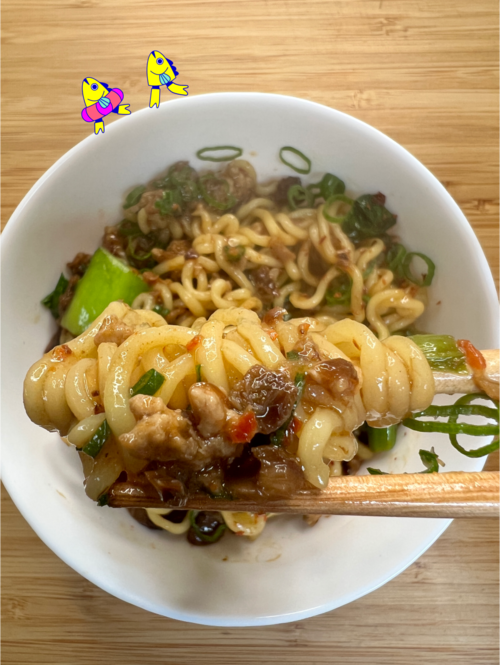

Rockfish & Pork Noodles Recipe

Ingredients
- 2 tbsp cooking oil
- 2 1/2 oz ground pork
- 1 tin Tiny Fish Co Rockfish in sweet soy sauce
- 1 cup bok choy leaves, chopped
- 1/2 tsp red chili flake
- 1 tsp cornstarch
- 1/2 cup water, stock, or dashi
- 3 3/4 oz dry ramen noodles
- green onions
- sesame oil
How to make
- Boil the ramen noodles until al dente; strain and rinse under cold water for 20 seconds and set aside.
- In a small bowl, whisk together the cornstarch and water and set aside.
- Heat a medium skillet and add the cooking oil and ground pork; using a wooden spoon or heat-proof spatula, break apart the ground pork and cook on medium heat until cooked through.
- Add a tin of rockfish, bok choy leaves and red chili flake and cook for a few minutes, stirring continuosly.
- Add the cornstarch mixture and bring the sauce to a boil; remove the skillet from the heat and toss in your ramen noodles.
- Add a handful of sliced green onion tops and a drizzle of sesame oil and serve.